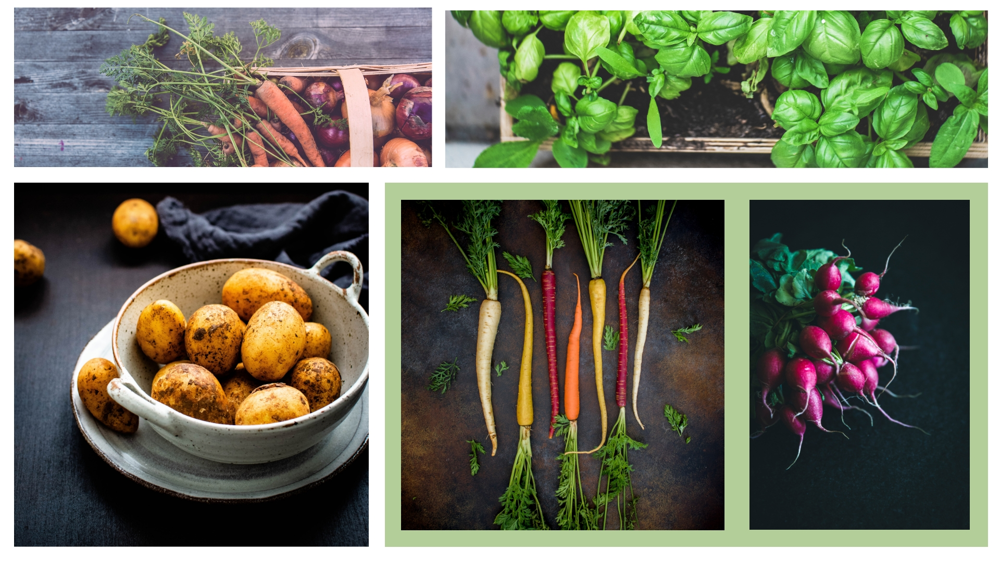
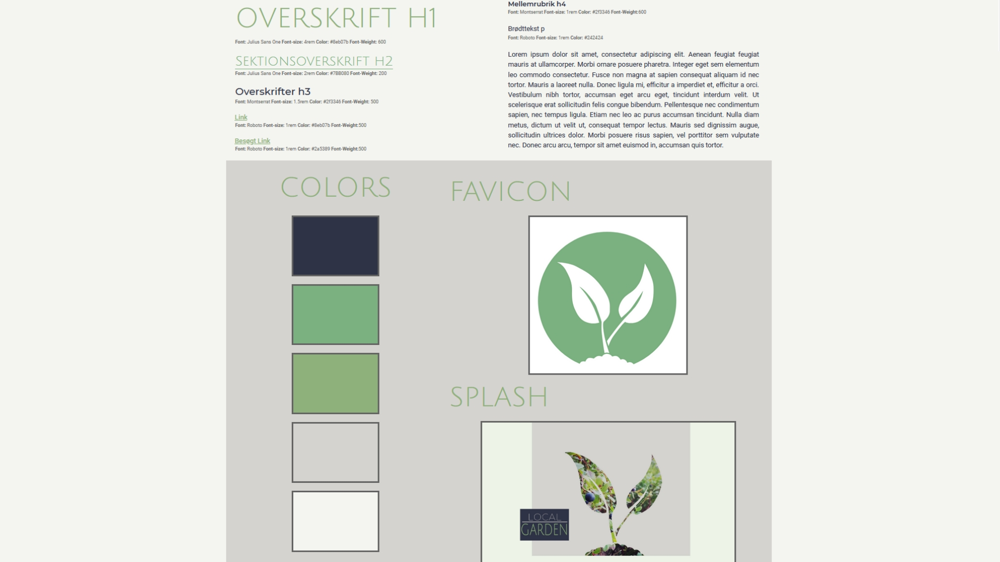

←
Moodboard og Styletile
Pretend you're water. Just floating without any effort. Having a good day. Without washing the brush, I'm gonna go right into some Van Dyke Brown, some Burnt Umber, and a little bit of Sap Green. Let's get wild today. You gotta think like a tree. At home you have unlimited time. Even the worst thing we can do here is good.
Just make little strokes like that. Let's put a touch more of the magic here. Talk to trees, look at the birds. Whatever it takes. We'll put a happy little sky in here. Use what you see, don't plan it. Fluff it up a little and hypnotize it. This is the way you take out your flustrations. If you didn't have baby clouds, you wouldn't have big clouds.

